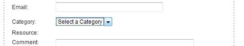
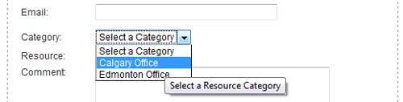
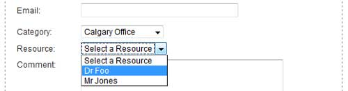

The first thing to point out is that Categories are OPTIONAL - you do not need to set up any categories unless you feel they would help or be useful to you.
What is a Category?
A category is an arbitrarily define entity that a resource can belong, or be assigned to. Categories sit above resources in the structure hierarchy.
Why use Categories?
Two reasons mainly;
Things to know about Categories.
There is a one to one relation between resource an category, you can only assign a resource to one category.
Hierarchy
Resource Category -> Resource -> Resource Service
Example:
Categories defined: Calgary Office, Edmonton Office
Resources:
Dr Foo - assigned Calgary Office
Dr Bar - assigned Edmonton Office
Mr Smith - assigned Edmonton Office
Mr Jones - assigned Calgary Office



What if Dr Foo works out of both offices?
He would no doubt not be in both locations at the same time. Make two resources called Dr Foo and assign one to each office. Each 'Dr Foo' will need it's own available dates and times.
To DISABLE the use of Resource Categories, do not create any!
If ANY Resource Categories are published, that will enable the use of Resource Categories on the booking screen. When enabled, ALL resources must be assigned to some category or they will not be displayed on the booking screen.
Publish: Sets one or more categories to Unpublished. Only Published categories will appear in the drop down list on the Appointment Booking screen.
Unpublish: Sets one or more categories to Unpublished so they will not show in the drop down list on the Appointment Booking screen.
Remove: Deletes one or more categories.
Edit: Opens the Category Edit screen to allow you to view and modify the category.
New: Opens the New Category screen to allow you to add a new category.
Help: Opens this help screen.
ID: Unique ID for the category.
Name: Category name.
Description: Category description, for internal use, does not appear on user screen anywhere.
Parent Category: ABPro supports 2 level hierarchy for categories. This column shows the parent category if there is one.
Display Order: Order the categories will appear in the Category drop down list.
Published: Indicates the published state.
Click on the Name link to open the edit screen.